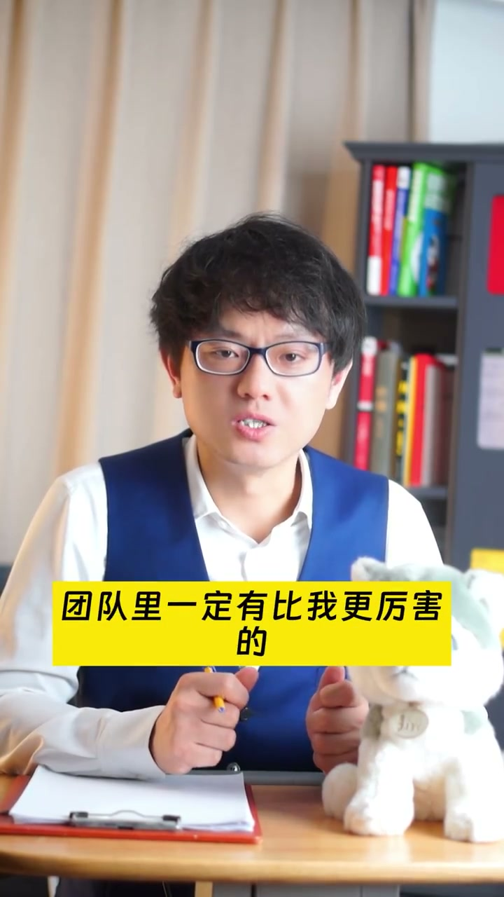

内容要点
一段 2 分钟职场面试课：HR 面试官其实不是筛选期，而是希望面试者按规则把戏演好、送到下一关的「配合者」。视频用离职理由、团队协作、跳槽频繁三个面试真题演示「包装文字」的语言艺术——不撒谎，但说 HR 想听的规则化回答，并点出平时刻意练习写作演讲，吹起牛来才更自然。
知识结构
HR 面试官通常希望面试者通过自己这一关，因为用人部门要人；只要你能按规则把戏演下去，就能被送去面业务主管。实际很多人演都演不好。
离职理由要说「太安逸想挑战新环境」；搞不定的事要说「依靠团队协作」；跳槽频繁要包装成「早期多尝试找到核心优势」。不是假话，是演戏规则。
面试很大一部分考察包装文字的语言艺术，平时刻意练习写作演讲，写得多、吹起来就自然。
面试不只是考能力，更考「包装文字的语言艺术」：不撒谎，但把真实经历组织成 HR 想听的规则化表达。
00:00-00:40HR不是筛选期：演戏有规则
开场抛出反直觉观点：职场中有一种场景，对方明知你在吹牛，却希望你吹得好听点，这时实话实说反而不尊重对方、给自己找麻烦——这就是 HR 面试。
讲者说职场小白时以为 HR 这关是筛选期，所以很紧张；后来经常和 HR 一起面试才明白，HR 都希望面试者通过自己这关，因为用人部门要人，HR 招不来人会被业务部门挑战。
但演戏是要有规则的：很多面试者表现太糟糕，演都演不好，自然不会被放去下一关。
00:41-02:09三个真题：如何包装不撒谎
真题一：离职理由。说「猪队友太多、老板抢功」HR 不会放你过关，要包装成「上一份工作太安逸了，我想尝试新挑战」——不是假话，只是说 HR 喜欢的理由。
真题二：搞不定的事怎么办。回答「立刻找老板」不行，要包装成「职场打拼比的是团队协作能力，团队里一定有更厉害的人，我会依靠团队的力量」。
真题三：为什么每份工作只干一年半。说「一年普涨4%，跳槽能涨15%」是作死，要包装成「职业早期多尝试几个方向找到核心优势，是上进的表现」——贵司让我来面试这个岗位，我做过很多岗位反而是我的优势。
HR 其实知道你在吹牛，但他只希望你吹得好听，就能送你去下一轮，任务完成。收尾点出：面试大部分考察包装文字的语言艺术，平时要刻意练习写作和演讲。

完整转录（32段）
以下文本由 Whisper medium 模型自动转录，可能存在少量识别误差，已尽可能修正。
职场中有一种场景,对方明明知道你在吹牛,可他希望你吹得好听点
最好不要实话实说
此时你实话实说反而是不尊重对方,也是给自己找麻烦
什么场景呢?
免试
HR面试官通常是第一关
先问你一个问题,HR这一关是筛选期还是助退期?
职场小白的时候,我以为是筛选期,所以会很紧张,因为工作不好找
可当我经常和HR一起面试时,才发现所有的HR面试官都是希望面试者能通过他们这一关的
他们不是筛选期,他们希望你能按照一定的规则把戏给演下去,就能送你到下一关,被业务主管面试
为什么呢?因为用人部门要人,你HR要是总招不来人,HR的头就会被业务部门挑战的
可实际看到很多面试者的表现实在是太糟糕了,演戏是要有规则的
演都演不好,面试者当然不会放你去下一关的
比如你上一份工作离职的理由是什么?
你说猪队友太多了,老板强迫功劳,这些HR是不会放你过关的,你要包装一下文字
怎么说呢?上一份工作太安逸了,我想尝试下新挑战
请注意,你说的不是假话,就是演戏的规则,说HR喜欢的理由
再比如,工作中如果碰到搞不定的事情,你怎么办?
回答如果是,当然是立刻找老板
不行,要包装一下,怎么包装呢?职场打拼比的是团队协作能力
如果我搞不定的话,团队里一定有比我更厉害的,我会依靠团队的力量
你看,这不是说假话对吗?再问你,为什么每份工作都只干了一年半?
你说一年普涨4%,现在跳个超能涨15%,怎么回答就属于自己作死了
HR照片卡的就是这种回答的人,怎么包装呢?
在我看来,职业生要在早期多尝试几个不同的方向,找到自己的核心优势是上进的表现
反而,我六年待在同家公司,那才叫懒惰
虽然我每份工作都只做了一年半,但在一年半里我把这个岗位的所有关键核心都学会了
贵斯来让我面试这个岗位,我想,我做过很多岗位,反而是我来应聘的优势
你看,官篇大话吗?其实,HR面试官知道你此时在吹牛,但是他只是希望你吹牛的
因为吹得那么好听,他当然就送你去下一轮了,他的任务就完成了
总结下,面试很大一部分在考察你的包装文字的语言艺术
你平时要刻意练习写作和演讲,写得多了,吹起来就会感觉很好